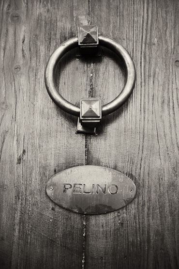
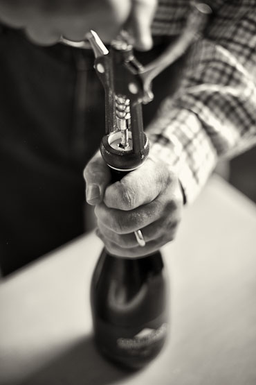
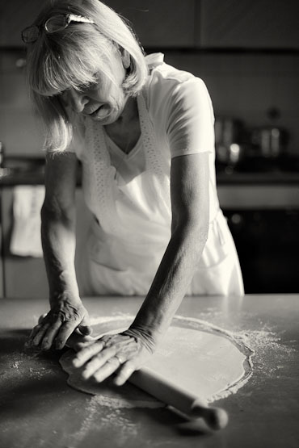
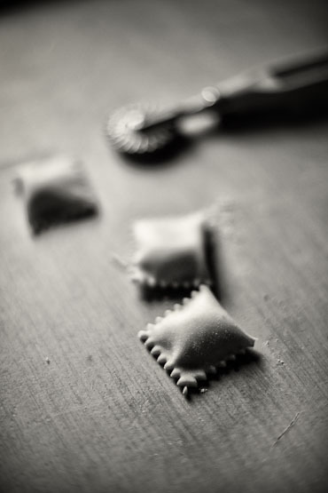
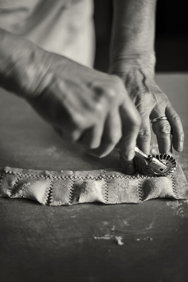
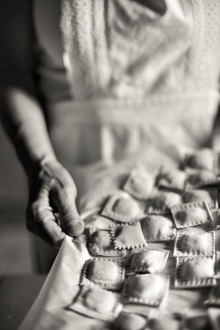

Why go to an ordinary restaurant if you can taste the real Italian cuisine presented by a proper Mamma at her home? Thanks to the Home Food project every traveller to the land of la dolce vita can now experience a real, Italian evening in the company of a real, Italian famiglia. You can do just like us and pick any location in Italy, whether it is a town or even on the countryside and see if there is a mamma, a cesarina, willing to cook for you. Our Home Food experience is with Leda di Timoteo and her husband in the charming town of Sulmona in the hinterland of Abruzzo. When we booked our evening through the website of Home Food we got an e-mail.
“At seven o’clock Leda di Timoteo is expecting you for a four-course dinner at her home.” The only thing we must bring is a big appetite to discover the real Italian cuisine. The fact that our Italian is poor and their English also, doesn’t matter. It’s all about the language of food now.
The matriarch of the kitchen
The huge, heavy wooden door swings open and Leda, our Cesarina for tonight, is standing in the hallway with a bright smile. She’s a frail appearance with a sleek bobcat hairstyle and of course the obligatory white apron tied around her waist. Her dining room is already set: lace linen, fine crockery, silver cutlery, crystal glasses, .. Next door there’s the kitchen where Leda is the Cesarina, the matriarch, the empress. Her husband stays wise fully away. Leda’s ricotta cheese ravioli appetizer has cheese from the nearby village of Campo di Giove. These handmade ravioli are lovely delicate squares bathing in a bright red sauce sprinkled with pecorino and finished with basil. Next is the secondi, a delicate lamb simmered for hours in a egg and lemon sauce. A local recipe, what else. Leda, just like all other Cesarine of the Home Food network, cooks only with local products. Just like their mothers and grandmothers did. Food exotism is banned in their kitchen. According to the founder of Home Food, Italian mothers often know more than chefs. The roots, the origins of the Italian cuisine can be found in the family, in the kitchen and in the pots of la mamma.
     
Our Home Food experience is with Leda di Timoteo and her husband in the charming town of Sulmona in the hinterland of Abruzzo. When we booked our evening through the website of Home Food we got an e-mail.
The Verdict
A Home Food lunch or dinner, can be very easily booked via the website. First, you have to register for free and then you receive a confirmation of membership. You choose location, date and time and check whether your Cesarina is available or not. Payment is via PayPal. Easy. Home Food will immediately send you a confirmation with all details like address and telephone number of the Cesarina. There are Cesarine all over Italy, from the North to the South with a concentration in the cities. The cost for an evening Home Food is about 40 euros per person, wine included. A steal!
Our Home Food experience is with Leda di Timoteo and her husband in the charming town of Sulmona in the hinterland of Abruzzo. When we booked our evening through the website of Home Food we got an e-mail.